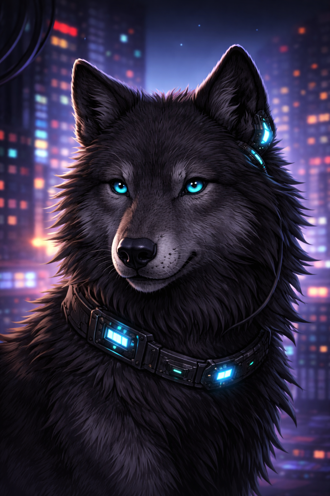

Los animales siempre me han gustado sobre todo los lobos y las aves. Son especies fascinantes
Los lobos nos enseñan a convivir en manada y apoyarnos entre familia, mientras que las aves nos enseñan libertad y que podemos volar lejos en las metas que nos propongamos.
Mis animales favoritos
- Lobo
- Canario
- Zorro
Mi animal favorito
